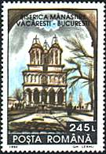
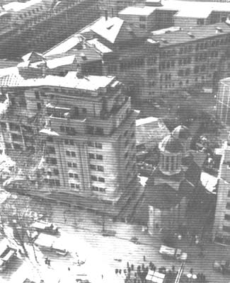

A BUCHAREST,
WE WILL NEVER SEE AGAIN
If you take a look at the set issued by Romania in 1993 and named in Scott "Historic Sites, Bucharest" you will probably say something like: "yes, interesting, but actually nothing special". Yes, for you maybe it isn't special, but for many of the inhabitants of Bucharest it was special, and how! Let's read what the Romanian catalogue (actually a price list from 1999) says: Monumente istorice distruse. And what says Michel about the same set, numbered 4859 - 4862? It says: Zerstörte historische Bauwerke. Actually the same name as what the Romanian catalogue reads, meaning destroyed historical monuments.
 |
 |
 |
OK, will you say, so what? There are so many destroyed monuments in the world, so what a difference make several more of them. And actually, if we study closer the stamps, the buildings displayed on stamps don't look destroyed at all! So why "destroyed", by whom, when and why? The goal of this philatelic page is to provide the answers.
The large street shown on the above picture was called only ten years ago "The Boulevard of the Victory of Socialism". The big building in the background had the official name: "The House of People." But only twenty years ago there were no traces of these gigantic buildings in Bucharest, the capital of Romania.

 |
 |
 |
 |
The area covered by the buildings shown above was a part of the so called Old Bucharest, consisting of small individual houses, several churches, an old market, monasteries and several historical buildings. Some of them are shown on the above stamps, and that not only because they were beautiful (representing by themselves the very soul of the capital), but because they were systematically destroyed, to be replaced by monuments of the victory of communism, a victory gained by force over the inhabitants of Bucharest. The inhabitants of old houses were obliged to accept flats in blocks where hundreds of people lived and where it was easier to permanently keep an eye on all of them. Several persons committed suicide, desperate in front of bulldozers attacking their houses, that were inherited from their parents and grand-parents.
I show you above, in its full "Disneyland" splendor, the second biggest building in the world, one that already appeared in the background on the first picture on this page. It is still called by the inhabitants of Bucharest "The House of the Fool", or "Dracula's House", even if its official name is today "The Palace of the Parliament." The whole complex was build in the period 1980 - 1990, in a starving country, where food and heating of houses became both luxuries. During the whole period no Western government or a big international organization had vigorously protested against this large scale cultural crime (erasing of the past) committed in Bucharest by the communist government, under the ruling of the communist party and guided by its leader Nicolae Ceausescu.
The second set is also dedicated to the destroyed buildings from Bucharest. It was issued in 1994, Sc. 3883-3886. Please move the mouse pointer over the stamps for more information.

Please take also a look at the non-philatelic document presented above. This is the former Enei Church, demolished by Ceausescu's order because it was allegedly damaged during the Earthquake of 1977. One can clearly see that it was the building on the left that was damaged, and not the church.

| Published:
06/15/2001. Revised: 05/14/2012
. Copyright © 2001 - 2012 by Victor Manta, Switzerland. All rights reserved worldwide. |
|